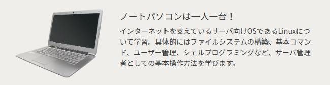

サイバーセキュリティー科
昼・２年課程
「ハッカー」とは、コンピュータ・インターネットの 高度な知識を持ち、その技術でコンピュ ータ・インターネットの世界に 貢献した人への尊称です。 サイバーセキュリティ科は、 本来の意味の「ハッカー」を目指します。
セキュリティを学習するうえでは、さまざまな知識が必要となります。ハッキングラボ（仮想環境） を用意し、さまざまなハッキング手法を実践して学ぶことでセキュリティを理解し、強固なシステムを 構築できるようになります。
Webサービスやオンラインゲームのバックエンドとして欠かせないものとなっている「クラウド」。 サイバーセキュリティ科ではAWS(Amazon Web Services)やGCP（Google Cloud Platform）等を利用して 、ネットワーク経由でのコンピューティング、データベース、ストレージ、アプリケーションなどさ まざまなサービスを構築・管理・開発を行うインフラエンジニアの基礎を習得します。